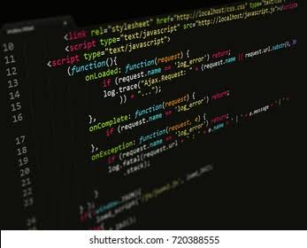

apresentação
Esta lista de tarefas simplificada proporciona uma abordagem eficaz para o gerenciamento de suas atividades diárias. Priorize as tarefas, estabeleça prazos realistas e mantenha o foco nas metas principais. Registre novas tarefas à medida que surgem e revise regularmente para garantir uma organização contínua. Ao manter esta prática, você maximizará sua produtividade e alcançará seus objetivos de maneira mais eficiente.
como usar
Use o menu acima para navegar nas diferente seções, (para adicionar tarefas va ao menu e clique em "tarefas". Após se adicionado uma tarefa ela só desaparecerá se vc clicar no símbolo de concluído
sobre
Esse e um simples site sobre lista de tarefas, foi criado usando html, css e java script, esse site está em desenvolvimento espero que gostem <3!

Créditos
Trabalho em desenvolvimento
estudante de informática
criador: Gabriel Henrique
espero q gostem